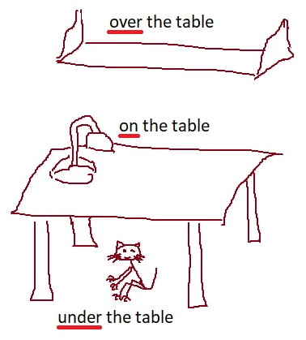

HomeIndex
HomeIndex GitHub
</>
GitHub
</>
Лексика
I'm sorry. — Простите/извините. Используется после причинения неудобства, а также при соболезновании. sorry — буквально сожалеющий.
— My dog died yesterday. — Моя собака вчера умерла.
— I'm sorry. — Мне очень жаль.
Excuse me — извините (используется перед причинением неудобства).
Excuse me, can you give me your pen please? — Извините, можете дать мне свою ручку.
| Слово | Перевод | Пример | Перевод примера |
|---|---|---|---|
| what? | что? | What do you do? | Что ты делаешь? |
| who? | кто? | Who is that guy? | Кто тот парень? |
| whom? | кому/кого? | Whom are you waiting? | Кого ты ждешь? |
| whose? | чей? | Whose is this cat? | Чей это кот? |
| where? | где? | Where are you? | Ты где? |
| куда? | Where do you go? | Куда ты идешь? | |
| откуда? | Where are you from? | Откуда ты? | |
| when? | когда? | When will you come back? | Когда ты вернешься? |
| why? | почему/зачем? | Why am I so beautiful? | Почему я такая красивая? |
| which? | который? | Which of these autos is yours? | Который из автомобилей твой? |
Quantity ['kwɒntıtı] — количество (quality ['kwɒlıtı] — качество).

| Количество | Неисчислимого | Исчисляемого | Неважно чего |
|---|---|---|---|
| Много | much | many | a lot of |
| Мало | little | few | — |
| Немного | a little | a few | — |
When I get older losing my hair many years from now... — Когда я стану старше, потеряю свои волосы много лет спустя...
Yes, I saw a rainbow ['reınbəʋ] a few days ago. — Да, я видел радугу несколько (немного) дней назад.
I had much money and I bought a lot of green cucumbers ['kju:kʌmbəs]. — У меня было много денег и я купил много зеленых огурцов.
There was little rain in the summer so we got few apples. — Летом было мало дождей, поэтому мы собрали мало яблок.
Can you please speak a little bit slower? — Можешь (пожалуйста) говорить немного медленнее?
huge [hju:dʒ] — огромный, гигантский
tiny — крошечный

part — часть
This part of the house is going to be renovated. — Эту часть дома планируется отремонтировать.
piece — кусок
I was hungry but could find only a small piece of cheese and a bottle of wine in the fridge. — Я была голодная, но в холодильнике нашла только маленький кусочек сыра и бутылку вина.
slice — ломтик
I'm gonna cut this meat into thin slices. — Я собираюсь нарезать мясо тонкими ломтиками.
quarter — четверть
It's a quarter to five now. — Сейчас без четверти пять.
half — половина
I gave her half, and kept half for myself. — Половину я отдал ей, а другую половину оставил себе.
whole [həʋl] — целое
The whole day he felt not well.. — Весь день он чувствовал себя нехорошо.
the same — тот же самый
When listening to this music I fell the same way as you. — Когда я слушаю эту музыку, я чувствую то же самое что и ты. Lately it seems to me that every day on the street I meet the same people. — В последнее время мне кажется, что каждый день на улице я встречаю одних и тех же людей.
Read and listen at the same time. — Читай и слушай одновременно (в одно и тоже время).
different — другой, различный
As for animals and food, there may be the following situations:
Перевод:
Что касается животных и еды, могут быть следующие ситуации:
similar — похожий, подобный
Well you don't have my favorite bakes today. Can you suggest anything similar? — Так, у вас сегодня нет моих любимых булочек. А можете предложить что-нибудь похожее?
exactly — точно, как раз
To get the same result we need to use exactly the same calculation method. — Чтобы получить такой же результат нам надо использовать в точности такой же метод вычислений.
approximately/about [ə'prɒksımıtli] — приблизительно
To make this cake I need about a half kilo of flour and exactly three eggs. — Для этого торта мне надо приблизительно 0,5 кг муки и точно 3 яйца.
The traffic jam will end in approximately thirty minutes. — Пробка закончится приблизительно через 30 минут.
like — похоже, подобно, подобным образом
She looks very much like her mother. — Она очень похожа на свою мать. (Она выглядит очень сильно похоже на свою мать.)
unlike — в отличии от...
Unlike his father, he is tall. — В отличие от своего отца он высокого роста.
Note
Не путать с to dislike — не нравиться.
Рассмотрим наречия, обозначающие степень признака.
very — очень
not very — не очень
quite [kwaıt] — довольно (таки), достаточно
enough [ı'nʌf] — достаточно
relatively ['relətıvlı] — относительно
Note
У слова quite существуют похожие по написанию слова:
My apartment is not very big, but it's comfortable enough. — Моя квартира не очень большая, но она достаточно комфортная.
I have enough money to buy a car. — У меня достаточно денег, чтобы купить машину.
Note
Слово enough может означать и степень признака, и оценку количества. В первом случае оно следует после признака, а во втором перед количеством.
— Would you like some more apples? — No, thanks, it's quite enough.
— Хотите еще немного яблок? — Нет, спасибо, этого вполне достаточно.
My cat is relatively young. — Мой кот относительно молод.

Местоименные наречия:
| Слово | Перевод | Пример | Перевод примера |
|---|---|---|---|
| now | сейчас | I'm busy now. | Я сейчас занят. |
| then | тогда | Then I had lunch but now I can help you. | Тогда я обедал, но сейчас могу тебе помочь. |
| then | затем | First wash your hands and then eat your food. | Сначала вымой руки, потом кушай. |
| before | до | Come before five o'clock. | Приходите до пяти часов. |
| after | после | After Sunday comes Monday. | За воскресеньем следует понедельник. |
| previous | предыдущий | My previous job was hard. | Моя предыдущая работа была трудная. |
| next | следующий | The next week will be warmer than the current one. | Следующая неделя будет теплее, чем текущая. |
| current | текущий | My current job is pleasant and interesting. | Моя нынешняя работа приятная и интересная. |
(The) next time — в следующий раз
(The) last time — в прошлый раз
all days long — все дни напролет
in the morning — утром
at noon — в полдень
in the afternoon — днем (во второй половине дня)
in the evening — вечером
at night — ночью
at midnight — в полночь
What's the time? — Сколько времени?
It's nine twenty five — девять двадцать пять (должно быть понятно из контекста утра или вечера).
Обозначение времени различается на дневное AM [,eı'em] и вечернее PM.
It's 10:15 AM (ten fifteen) — 10:15 утра
It's 10:30 PM (ten thirty) — 10:30 вечера
Ten forty-five — 10:45
Quarter ['kwɔ:tə] past ten — четверть одиннадцатого
Half [hɑ:f] past ten — половина одиннадцатого (после десяти)
Quarter to eleven — без пятнадцати одиннадцать
Today I had my breakfast at about 9:30. — Сегодня я обедала примерно в 9:30.
Особые случаи:
12:30 PM — 12:30 дня
12:30 AM — половина первого ночи
— What is the date today? — Какая сегодня дата?
— Today is the fifth of April. — Сегодня 5 апреля.
— What is the day today? — Какой сегодня день?
— Today is Friday. — Сегодня пятница.

yesterday — вчера
today — сегодня
tomorrow — завтра
the day before yesterday — позавчера
the day after tomorrow — послезавтра
Для указания времени используется предлог at.
What time will we meet tomorrow? — В какое время мы встретимся завтра?
Tomorrow we'll meet at seven o'clock. — Завтра мы встретимся в семь часов.
It started raining at 2pm and it stopped at about five. — Дождь начался в 2 часа дня и закончился около 5-ти.
При указании дней используется предлог on.
We celebrate the New Year on January 1st. — Мы празднуем новый год 1 января.
I didn't wash my cat on Monday, I'm gonna do it on Friday. — Я не мыла кота в понедельник, я собираюсь сделать это в пятницу.
При указании месяцев, лет и времен года используется предлог in.
Shakespeare was born in fifteen sixty four (1564). — Шекспир родился в тысяча пятьсот шестьдесят четвертом году.
In summer it gets dark at nine o'clock. — Летом темнеет в 9 часов.
I'm gonna fly away in September. — Я улетаю в сентябре.
Модальные глаголы, от других отличаются тем, что не могут выражать конкретные действия, а лишь отражают отношение говорящего к этим действиям.
Типичные модальные глаголы, такие как may, can, must в предложениях выступают как вспомогательные глаголы и подчиняются тем же правилам при формировании утвердительных, вопросительных и отрицательных предложений.
He can speak English. — Он может говорить по английски.
He can not speak English. — Он не может говорить по английски.
Can he speak English? — Может он говорить по английски?
Why can't he speak English? — Почему он не может говорить по английски?
Important
Нельзя сказать, например, "He doesn't can speak English." или
"Does he can speak English?".
Модальные глаголы в 3 лице, ед.ч. не имеют окончание s, а также смысловые глаголы в этом случае не имеют этого окончания.
Note
Таким же образом ведет себя и глагол will (формирующий будущее время). После него глаголы в 3 лице, ед.ч. так же не имеют окончание s.
Данные предложения можно считать в Простом Настоящем времени, не смотря на то, что используется вспомогательный глагол can вместо to do.
Рассмотрим каждый глагол по отдельности.
Can—- могу. Выражает возможность (физическую, техническую), способность. В некоторых случаях значение может быть немного иным, надо запомнить.
I can walk but I can't fly. — Я могу ходить, но я не могу летать.
We cannot meet tonight because we need to work. — Мы не можем встретиться сегодня вечером, потому что нам надо работать.
Отрицательные формы: can't, cannot.
Can I have an apple? — Можно мне яблоко? (Здесь значение скорее дозволенности, разрешения.)
— Sure, here you are/Sorry, we don't have apples today.
В прошедшем времени глагол can имеет форму could.
Could you speak English two years ago? — Мог ты говорить по английски 2 года назад?
— Yes, I could/No, I couldn't.
В будущем времени используется выражение to be able — Быть способным, быть в состоянии. Глагол to be able можно использовать и в других временах.
I won't be able to be there. — Я не смогу быть там.
You drink too much, will you be able to drive tomorrow? — Ты пьешь очень много, сможешь ли
ты завтра вести машину?
— Yes, I will. — Да, смогу.
— No, I will not, but I like this beer and I don't want to stop. — Нет, не буду, но мне нравится
это пиво и не хочу останавливаться.
Were you able to understand what I told you yesterday? — Ты была в состоянии понимать, что я тебе говорил вчера?
Модальные глаголы can и could, также используются для выражения вежливой просьбы.
Can you help me? — Можете помочь мне?
Could you please close the door? — Могли бы вы (пожалуйста) закрыть дверь?
Couldn't you please call the next student? — Не могли бы вы позвать следующего студента?
May — могу (выражает дозволенность, а также возможность в смысле вероятности).
May I come in? — Могу/можно я войду?
— Yes, you may/No, you may not.
It may rain. — Возможно, будет дождь.
He may come or he may not. — Может быть, он придёт, а может быть, и нет.
В прошедшем времени глагол may имеет форму might [maıt].
It might be true but probably not.— Может быть, это и правда, но вряд ли.
Модальные глаголы may и might, также используются для выражения вежливой просьбы.
Might I leave this book with you? — Может быть, вы разрешите мне [не позволите ли вы] оставить эту книгу у вас?
You might come and see me now and then. — Зашли бы ко мне как-нибудь.
В будущем времени используется выражение be allowed to — разрешено, дозволено (to allow — разрешать, дозволять).
I may enter this office today. — Я могу войти в офис сегодня.
But I will not be allowed to do it tomorrow. — Мне нельзя будет сделать это завтра.
Important
Нельзя сказать "I will may do it tomorrow.".
Must — выражает долг, необходимость, а иногда предположение.
You must know this guy. —- Ты должен знать этого парня. (В смысле, мы предполагаем, что скорее всего ты его знаешь).
I must go. — Мне нужно [я должен] уйти.
You mustn't do that. — Ты не должен этого делать [должен не делать].
He must be there now. — Он, вероятно, сейчас там.
Для выражения будущего и прошедшего времен используется фраза to have to, которое имеет значение придется (что-то сделать).
I must work today and I had to work yesterday but tomorrow I'll be free. — Я должен работать сегодня и я должен был работать вчера, но завтра я буду свободен.
I'll not have to wash my car. — Я не должен буду мыть мою машину.
I’ll have to meet him. –-- Я буду должен с ним встретиться.
Should — может использоваться в выражениях (мне следует, я должен). По сравнению с глаголом must является более мягким.
We should go now. — Нам пора [надо] уходить.
You should really be more careful. — Вам на самом деле следует быть осторожнее.
Should I bring anything to the party? — Мне принести что-нибудь на вечеринку?
Для простоты можно считать что глагол shall значит то же самое, что и глагол should, но только более жесткий и строгий.
would like — переводится как, мне бы хотелось. Используется очень часто для обеспечения должного уровня вежливости.
Would you like a cup of coffee? — Не желаете ли чашечку кофе?
I'd like to go home. —- Мне бы хотелось поехать/пойти домой.
Need — надобность или нужда. Он может использоваться с дополнением.
I need to go. — Мне надо идти.
I need same more time to finish this job. — Мне нужно сколько-то времени, чтобы закончить эту работу.
It needs to be done carefully. — Это должно быть сделано с осторожностью.
Глагол let добавляет значение разрешения, позволения, предложения.
Live and let live. — Живи и позволяй жить другим.
После глагола "let" инфинитив применяется без частицы "to".
Let it be. — Пусть будет так.
В отрицательных и вопросительных предложениях глагол let используется так же, как обычные глаголы.
We wanted to have a walk but the police didn't let us to the park. — Мы хотели погулять, но полиция не пустила нас в парк.
— Will you let me kiss you tomorrow? — Ты позволишь мне поцеловать тебя завтра?
— No, I will not, but I let you kiss me now. — Нет, но я разрешаю тебе поцеловать меня сейчас.
Let's have a lunch? — Давай пообедаем?
Note
Let's — это сокращение для Let us ~ позволим себе (давайте).
— Who is the best person in the world? — Кто самый лучший человек на Земле?
— Hmm, let me think... Well, it's clear! I am! — Хм, дай мне подумать... А, ну это понятно! Я!
I will respond to you later, let's say, on Tuesday next week. — Я отвечу вам позже, скажем, во вторник на следующей неделе.
Ряд глаголов выражают отношение к действиям выраженными другими глаголами. По смыслу они могут являться модальными, однако формально таковыми не являются.
I want to eat. — Я хочу есть.
В неформальной речи выражение want to может заменяться на wanna.
I wanna be with you. — Я хочу быть с тобой.
I like to sleep longer on weekends. — Мне нравится спать долго на выходных.
Do you wish to know what happened? — Вы желаете знать что случилось?
I hope to hear from you soon... — Я надеюсь на скорый ответ (жду ответа)...
Try to come earlier. — Постарайтесь прийти пораньше.
Don't even try to climb [klaım] that mountain. — Даже не старайся подняться на эту гору.
promise — обещать
Данная фраза не является модальным глаголам, но по смыслу может быть отнесена к ним.
I'm going to find a job. — Я собираюсь найти работу.
I'm going to have a walk. — Я собираюсь на прогулку.
What are you going to do? — Что ты собираешься делать?
В неформальной речи выражение going to может заменяться на gonna.
I'm gonna find a job. — Я собираюсь найти работу.
Are you gonna dance with him? — Ты собираешься с ним танцевать?
Yes, we are gonna dance today. — Да, мы собираемся танцевать сегодня.
Прямое дополнение выражает действие направленное на предмет непосредственно. Глаголы выражающие такое действие называются переходными и требуют дополнения в винительном падеже (без предлога).
I love my cat.
I'm cooking food now.
I have a car.
Косвенное дополнение выражает действие направленное на предмет опосредованно. Глаголы выражающие такое действие называются непереходными и требуют дополнения в других падежах, кроме именительного и винительного иногда с предлогом.
I correspond to my friend in the other city. — Я переписываюсь с моим другом в другом городе.
Nobody objects to this schedule ['skedju:l]. — Никто не (возражает) против этого расписания.
You can always rely on her. — Ты можешь всегда положиться на нее.
I'm going to think about your proposal [prə'pəʋz(ə)l]. — Я собираюсь подумать над твоим предложением.
Прямые и косвенные дополнения могут использоваться вместе.
Will you introduce [,ıntrə'dju:s] me your friend? — Ты представишь мне своего друга?
Различить прямое и косвенное дополнение можно по наличию или отсутствию предлога, а если это не удается, то считается что косвенное дополнение идет перед прямым.
Will you introduce your friend to me? — Ты представишь мне своего друга?
Will you introduce me to your friend? — Ты представишь меня своему другу?
| Глагол | Перевод | Пример употребления |
|---|---|---|
| to agree | соглашаться | I didn't like the plan, but I had to agree. — Мне не понравился план, но пришлось согласиться. |
| to doubt [daʋt] | сомневаться | Mom is the only one who never doubted me. — Мама — единственная, кто никогда не сомневался во мне. |
| to dislike | не любить | I don't understand why your parents dislike me. — Не понимаю, почему твои родители меня не любят. |
| to prefer | предпочитать | Ralph prefers doing things his way. — Ральф предпочитает делать все по-своему. |
| to wish | желать | I wish you good luck. — Желаю удачи. |
| to smell | чувствовать запах | I smelled tangerines and New Year’s Eve as soon as I walked in. — Я почувствовала запах мандаринов и Нового года, как только вошла. |
| to taste | чувствовать вкус | You can taste a hint of chocolate in these cookies. — В этом печенье чувствуется привкус шоколада. |
| to belong | принадлежать | This house belongs to our cousins ['kʌz(ə)n]. — Этот дом принадлежит нашим кузенам. |
| to weigh [weı] | весить | This bag of flour weighs three kilos. — Этот мешок муки весит три килограмма. |
see (saw, seen) — видеть (видел, увиденный)
I can see you. — Я могу видеть тебя.
Have you ever seen the rain? — Ты когда-нибудь видел дождь?
look — смотреть, в зависимости от контекста может принимать другие значения.
I'm looking at you. — Я смотрю на тебя.
You are looking good! — Ты выглядишь прекрасно!
A month ago I was looking for new students. — Месяц назад я искала новых учеников.
Yesterday I looked after your children. Can you look after mine today? — Вчера я
присматривала за твоими детьми. Можешь сегодня посмотреть за моими?
a look — взгляд
I have a problem with my computer, can you take a look? — У меня проблема с компьютером, можешь посмотреть? (в смысле, только посмотреть и ничего больше)
watch — смотреть (в смысле рассматривать)
Do you want to watch a movie? — Ты хочешь посмотреть фильм?
listen — слушать
I love listening to you. — Я люблю слушать тебя.
hear (heard [hɜ:d], heard) — слышать
We heard the sounds of music today. — Мы сегодня слышали звуки музыки.
I tried to listen, but I didn't hear. — Я пытался слушать, но не услышал.
speak (spoke, spoken) — говорить (чаще используется в смысле способности)
Do you speak English? — Вы говорите по-английски?
public speaking — публичное выступление
say (said, said) — сказать (чаще, как факт произнесения чего-то)
I said I was hungry. — Я сказал, что хочу кушать.
What did you say? — Что ты сказал?
tell (told, told) — сказать (в смысле рассказать, сообщить)
To tell a story. — Рассказать историю.
Can you tell me about yourself? — Можешь рассказать о себе?
I've already told you about that. — Я уже рассказал тебе об этом.
talk — разговаривать (вести диалог, монолог)
We need to talk. — Нам надо поговорить.
We didn't talk yesterday. — Мы не разговаривали вчера.

ask — спрашивать, просить
Ask him about the trip. — Спроси у него о поездке.
May I ask you a question? — Могу я задать тебе вопрос?
I asked him for a pen. — Я попросил у него ручку.
answer — ответ, отвечать
He answered me right away. — Он мне ответил сразу.
Do you want a short answer or a long one? — Ты хочешь короткий или длинный ответ?
to go (went, gone) — ходить, уходить.
I went to a food store yesterday. — Я вчера ходила в продуктовый магазин.
I must go. — Я должен идти (уходить).
I need to go. — Мне надо идти (уходить).
Since you are gone. — С тех пор как ты ушла. Scorpions
I'm planing to go there by car/bus/train/taxi. — Я планирую поехать туда на машине/автобусе/поезде/такси.
to walk — идти/ходить пешком
to have a walk — гулять
to run (ran, run) — бежать
I forgot my keys and had to run back home. — Я забыла ключи и мне пришлось бежать обратно домой.
The time when you return and find me here and run straight to my waiting arms. — Время, когда ты вернешься, найдешь меня здесь и побежишь прямо в мои ожидающие руки.
to run away — убегать, удирать
stay — оставаться (на месте)
Yesterday it rained, so I stayed home. — Вчера шел дождь, поэтому я осталась дома.
Enjoy your stay! — Приятного пребывания! (букв. Наслаждайся своим нахождением тут.)

get (got, got) — брать, получать, добираться, становиться
WYSIWYG — What you see is what you get. — Что ты видишь, то ты и получаешь.
How can I get to the airport? — Как я могу добраться до аэропорта?
I'm getting stronger every day. — Я становлюсь сильнее с каждым днем.
put (put, put) — класть, ставить
I went to the village ['vılıdʒ] and put my foot in the river. — Я поехал в деревню и опустил
ногу в реку.
Don't put the basket on the table, put it on the floor. — Не ставь корзину на стол,
поставь её на пол.
He put the money in his wallet and then put his hands into his pockets. — Он положил
деньги в кошелёк, а затем засунул** руки в карманы.
give (gave, given) — давать, дарить (gift — подарок, дар)
Close your eyes, give me your hand. — Закрой свои глаза, дай мне свою руку.
(The Bangles - Eternal Flame,
слова)
I was given a cat for my birthday. — На день рождения мне подарили кота.
take (took, taken) — брать
He took a book from the table. — Он взял книгу со стола.
accept — принимать

I think I will accept this invitation. — Я думаю, я приму это приглашение.
receive [rı'si:v] — получать
I was so happy when I received a letter from my friend. — Я была так счастлива, когда получила письмо от друга.
move [mu:v] — перемещать, двигать
Can you please help me to move the sofa from this corner to that corner. — Можешь помочь мне передвинуть диван из этого угла в тот угол?
keep (kept, kept) — держать, удерживать, хранить
I can make money but I cannot keep it. — Я могу зарабатывать деньги, но не умею беречь их.
keep (going) — не прекращать что либо делать (движение)
Though English is hard, I keep learning it. — Хотя английский и сложный, но я не прекращаю его учить.
goalkeeper — вратарь
though [ðəʋ] — хотя
Though we are so different we love each other. — Хотя мы такие разные, мы любим друг друга.
as if — как будто
As if you didn't know that! — Как будто бы вы этого не знали!
still — все еще, несмотря на это
The cat was old but he still caught mice. — Кот был старый, но все еще ловил мышей.
She's the kind of girl you want so much, it makes you sorry, still you don't regret a single day. — Она из тех девушек, которых ты так хочешь, и это делает тебя печальным, но [несмотря на это] ты не жалеешь ни об одном дне.
at last/finally — в конце концов, в конечном счете, наконец-то.
We were talking for more than an hour and finally he agreed. — Мы говорили больше часа и, в конце концов, он согласился.
It's cold and snowy outside but spring will come at last. — На улице холодно и снежно, но весна придет в конце концов.
so/that's why — поэтому
It was raining and so I did not go out. — Шёл дождь, и поэтому я не выходил.
I've already been studying English for more than two years. That's why now I can speak a little bit. — Я учу английский уже более двух лет. Поэтому сейчас я уже могу немного говорить.
certainly/of course — конечно, разумеется
He will certainly come back. — Он непременно вернётся.
Также см. здесь.
| Название | Прилагательное | Житель | Нация |
|---|---|---|---|
| Russia | Russian | a Russian | the Russians |
| Egypt | Egyptian | an Egyptian | the Egyptians |
| Germany | German | a German | the Germans |
| Britain* | British | a British man/a British woman | the British |
| France | French | a Frenchman/a Frenchwoman | the French |
| Poland | Polish | a Pole | the Poles |
| Spain | Spanish | a Spaniard | the Spanish |
| Sweden | Swedish | a Swede | the Swedes |
| Turkey | Turkish | a Turk | the Turks |
| Italy | Italian | an Italian | the Italians |
| China | Chinese | a Chinese | the Chinese |
| Japan | Japanese | a Japanese | the Japanese |
| India | Indian | an Indian | the Indians |
| The United States of America (USA)** | American | an American | the Americans |
| Canada | Canadian | a Canadian | the Canadians |
* Другое, более официальное, название этой страны — the United Kingdom
** Названия стран, включающие "объединяющие" слова, начинаются с определенного артикля the. Примеры: the United Kingdom, the United States, the Russian Federation, the Soviet Union, the USSR (the Union of the Soviet Socialist Republics).
— Where are you from? — Откуда Вы?
— I'm from Russia. — Я из России.

Summer is my favorite season. — Лето мое самое любимое время года.
In summer it's warm and there are a lot of different fruits. — Летом тепло и много
разных фруктов.
Still/however, sometimes it gets hot and that is hard/difficult to survive [sə'vaıv]. — Однако,
иногда становится жарко, что бывает трудно пережить.
I don't like winter because in winter it's cold. — Я не люблю зиму, потому что
зимой холодно.
In winter it also snows that is unpleasant sometimes. — Зимой также идет снег,
что иногда неприятно.
It's winter now but right now it's not snowing outside. — Сейчас зима, но прямо сейчас
на улице снег не идет.

In autumn ['ɔ:təm] it often rains and the weather is dull [dʌl] and sombre. —
Осенью часто идет дождь и погода пасмурная и мрачная.
It's getting colder and yellow leaves are falling from the trees. — Становится холоднее,
и с деревьев опадают желтые листья.
The nature ['neıtʃə] seems to go to sleep until spring. — Природа словно засыпает до весны.

In spring, the grass is getting green, the flowers start blooming and the birds start singing. —
Весной зеленеет трава, распускаются цветы и поют птицы.
It's also getting warmer and the days are getting longer. — Также становится теплее и дни
становятся длиннее.
The wind may blow at any time of the year. — Ветер может дуть в любое время года.
Sometimes it brings rain, sometimes dust. — Иногда он приносит дождь, иногда пыль.
to work — работать
work — работа (обычно что-то одноразовое)
job — работа (более постоянная, например в офисе)
to employ — трудоустраивать, нанимать
employer — работодатель
employee — наемный работник
employment — трудоустройство
employed — трудоустроенный
unemployed — безработный
The woman started talking — and I couldn't understand her. Not at all! — Женщина начала говорить, и я не мог ее понять. Вообще ничего!